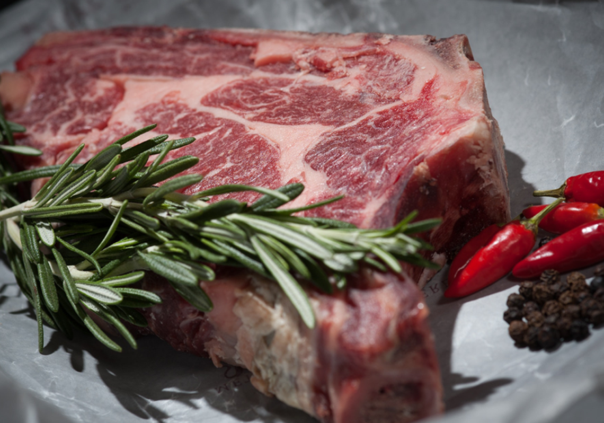

常聽到有人說「我沒有胖」，我只有顆肚子比較大而已，「啊...那就是胖啊」。
你身體裡面的脂肪會堆積在哪裡？其實跟你的性別、年齡、荷爾蒙的分泌有很大的關係。
為什麼胖在肚子？
如果一個小朋友很胖的話，比較多的是全身都胖，很少看到只有肚子很大的，但是對於四、五十歲的中年人，很多事四肢纖瘦缺乏肌肉同時間肚子又很大，一般而言隨著年齡愈來愈大，脂肪越來越傾向於往腹部堆積，而男性的這種狀況有更佳的嚴重，女生則是在懷孕後以及更年期後，腹部脂肪的堆積越來愈顯著，這跟荷爾蒙的租用有很大相關性。
脂肪怎麼分佈很重要
要看一個人健康的狀態大家已經知道說量體重或者BMI並不能夠完全呈現，因為即使你的體重很重，那也要看你的肌肉量的超重還是脂肪的超重。那脂肪怎麼分佈其實也有關係喔。常見的有分下肢肥胖的梨形身材、腹部型肥胖的蘋果型身材。攤開流行病學的調查，比起全身的總脂肪含量高，腹部型肥胖才是最具風險性的，和很多的慢性疾病有強相關性，像是高血壓、高血脂以及糖尿病等等。所以假如你是腹部型肥胖的話，你的慢性疾病發生風險率就很高。
腹部肥胖怎麼定義？
主要是腹部肥胖的人內臟脂肪也很高，所以翻開肥胖的定義，如果男性腰圍超過90公分，女性超過80公分也叫做肥胖，因為你沒有辦法每天斷層掃描去量測內臟脂肪，但是可以從腰圍去做一個間接量測。如果更進一步的分析，可以量你的腰臀比，去觀察你的脂肪是怎麼分佈的，男生腰臀比超過0.9，女生超過0.85都是內臟脂肪的高危險群。
內臟脂肪危險的原因？
這個区域的脂肪代謝和合成的速率很旺盛，哪有隻有內臟脂肪直接跟直通肝臟的門靜脈連結，導致於肝臟會一直不停的接受到高脂酸的血液，長期浸潤在高脂肪酸裡面對是有毒性的，會進而誘發一連串的內分泌失調。
靠飲食怎麼消肚子？

很多人希望只可以靠飲食消肚子，但是很遺憾，小編真的找文獻找超久，只有少數幾篇有說用不飽和脂肪取代飽和脂肪酸，像是用魚肉取代豬肉、牛肉、雞腿肉這些飽和脂肪，或者是糖類攝取，從一般建議的50%控製到40%的飲食。注意喔，這邊並不是叫你完全不吃糖類，而是大概便當的飯量只吃一半的程度。
關於飲食，還沒有一定的共識說要怎麼做才可以降低內臟脂肪。因為雖然控制飲食確實可以減重也能減脂，但是消除的主要是脂肪量以及皮下脂肪量。如果特別要消除內臟脂肪的話，還是得需要靠運動才會有顯著的幫助。
靠運動怎麼消肚子？
大多數的研究結論是有氧運動對於消除腹部脂肪有顯著的效果，而且阻力運動效果則不顯著。原理是這樣的，運動促進生長激素分泌，生長激素又直接促進內臟脂肪的分解，阻力運動是在運動是分泌生長激素，但是有氧運動尤其是高強度的有氧運動在運動後的24小時都還會持續分泌生長激素，所以分解內臟脂肪的效果最好。
所以假如你只有在做重訓的話，還是建議要搭配一些有氧運動會比較恰當，但是並不是只要有做運動就好了，可能你逛街一整天或者是你去外面，散個步就覺得說今天有運動到了，但是其實你的運動強度沒有達到，也是沒有效果的。至少要達到中等強度，你沒辦法邊運動邊講話的，稍微有點喘的程度才可以，因為要達到這樣的強度才會開始活化內分泌反應，分解腹部脂肪，一週的運動的量是建議>150分鐘。
大部分的研究都證實，你的運動強度和運動量都有達到的話，即使體重沒有下降，你的內分泌其實都已經有在反應，其實也是越來越健康的狀態，跟體重的下降沒有關係。一週>150分鐘等於是一週運動三天的話，每天要運動到會喘的程度一小時以上才能道道這樣子的運動量，消除內臟脂肪真的沒有那麼容易喔～因為你是在跟自己的身體年紀漸長的內分泌對抗。
假設你是沒有什麼時間可以做長時間有氧運動的人，也有比較新的研究發現說，短時間的間歇性有氧運動做30分鐘，就可以達到做一小時有氧運動的燃燒內臟脂肪功效，因為間歇有氧可以在短時間內達到刺激分解腹部脂肪的強度，又同時擁有有氧運動長時間分泌生長激素的功效，對於請求效率的現代人來講也是一個很好的選擇。